Электрические сигналы
Cигналом называют процесс изменения во времени физического состояния какого-либо объекта, служащий для отображения, регистрации и передачи сообщений. Генератором электрических сигналов, чаще всего, служит какая-нибудь схема.
В электронике и электротехнике в декартовой системе координат по оси Х откладывают время t, а по оси Y - напряжение U (рис. 1).
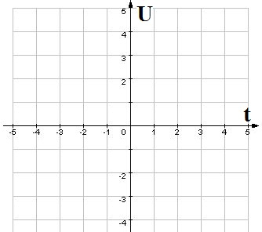
Прибор, с помощью которого можно наблюдать электрические сигналы, называется осциллографом, а график этого напряжения называется осциллограммой.
Самым простым электрическим сигналом является сигнал постоянного тока, который представляет собой прямую линию, параллельную оси времени t(рис. 2)
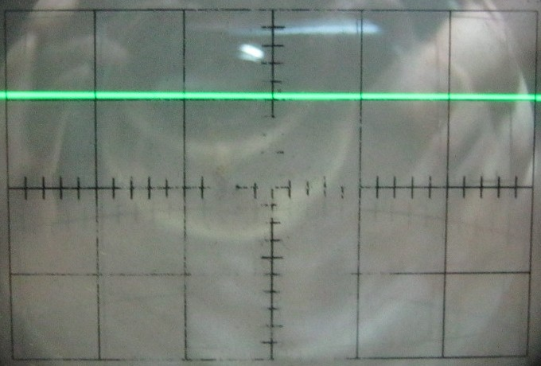
Источниками сигнала постоянного напряжения могут быть:
- батарейки;
- аккумуляторы;
- другие химические источники тока.
Если напряжение будет принимать хаотические значения, получится сигнал шума.
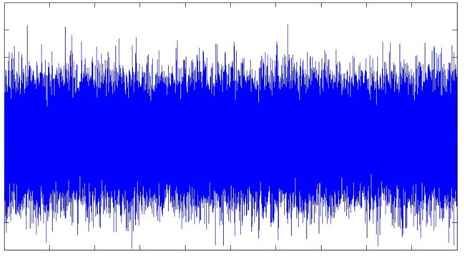
В электронике часто использую синусоидальный (гармонический) сигнал. На синусоиде строится почти вся электроника. Напряжение в домашней электросети является синусоидальным сигналом частотой 50 Гц и амплитудой 310 В.
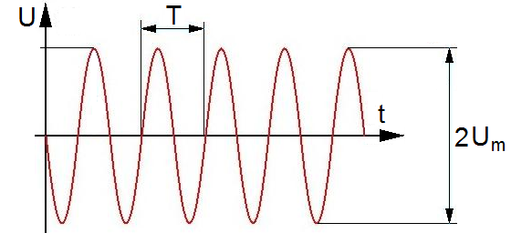
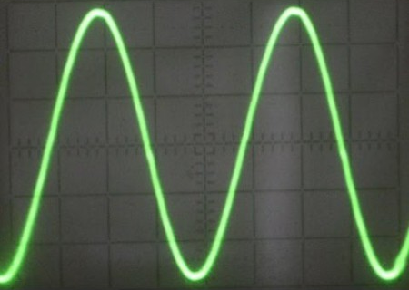
Так как синусоидальный сигнал повторяет свою форму на протяжении всего времени, то он относится к периодическим сигналам.
Основные параметры периодических сигналов:
- Амплитуда Um — максимальное отклонение напряжения от нуля и до какого-то значения.
- Период T — время, за которое сигнал снова повторяется.
- Частота f — количество колебаний сигнала за единицу времени. Единица измерения - Герц (Гц). Частота является обратным значением периода:
f=1/T
- Размах 2Um — сумма абсолютных значений положительной и отрицательной амплитуд (двойная амплитуда) (рис 4, 8).
В цифровой электронике используется прямоугольный сигнал (рис. 6). Прямоугольный сигнал, у которого время паузы и время длительности сигнала равны, называется меандром(рис. 7).
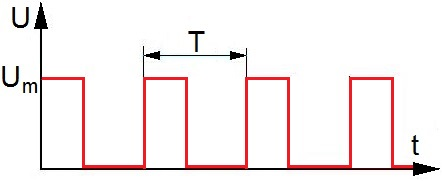
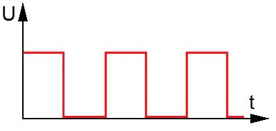
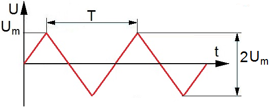
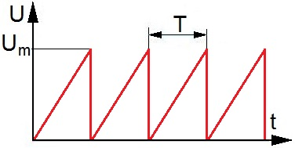
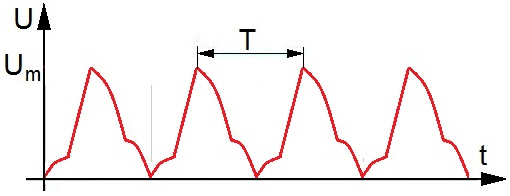
Импульсы — это сигналы, которые не поддаются периодическому закону и меняют свое значение в зависимости от ситуации (рис. 11).
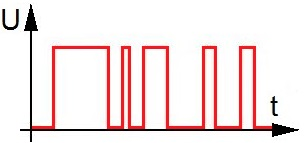
Звуковой сигнал похож на белый шум, но несет информацию в виде звука. Если такой сигнал подать на динамическую головку, то можно услышать звук.
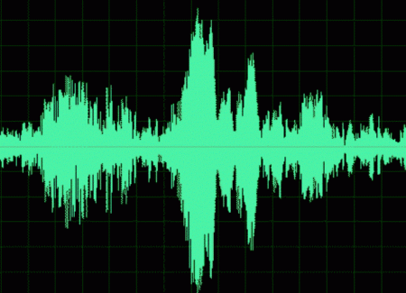